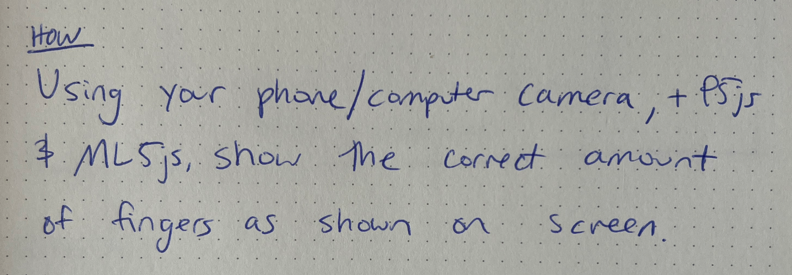
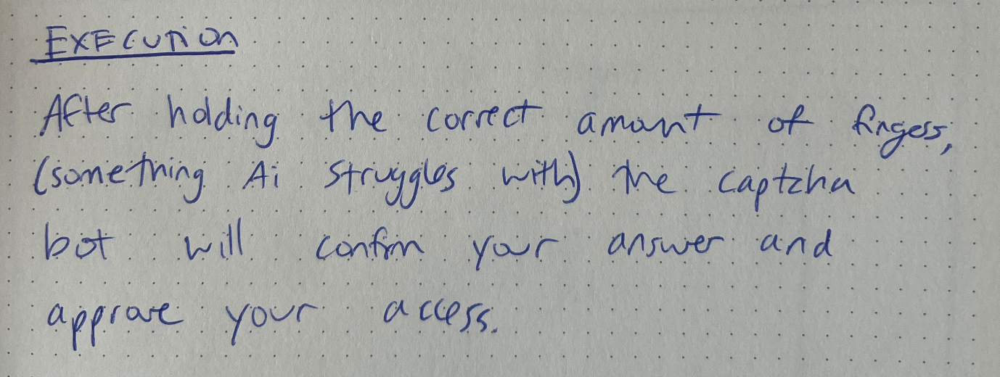

My idea for this project is to create a new type of captcha bot that requires you to show the correct amount of fingers to verify you're human.
 I'm about halfway done. I was able to train the ai to recognize the correct amount of fingers. I just need to add the interaction to confirm that you're human.
https://editor.p5js.org/wyatt-3/sketches/S3B-C_Pgh